Não. Pelo menos não com as bebidas “normais” que a gente encontra por aí. Apesar de o álcool consumível ser do mesmo tipo do utilizado como combustível (o etanol), ele aparece numa concentração bem menor nas bebidas
– o chamado teor alcoólico. No Brasil, o álcool vendido nos postos tem que ter pelo menos 92,6% de etanol. [Nenhuma bebida vendida] comercialmente no país chega nem perto dessa concentração. Com teores alcoólicos na faixa
de 40%, bebidas como pinga, vodca e uísque têm mais água do que etanol em sua fórmula. E é justamente esse excesso de água que impede a combustão das bebidas nos pistões do motor. Por isso, o carro nem dá partida.
[...]
BIANCHIN, Victor.
Mundo Estranho , 1-
o mar. 2009. Abril Comunicações S. A. Disponível em: <https://super.abril.com.br/mundo-estranho/da-para-abastecer-um-carro-com-bebida-alcoolica/> . Acesso em: 26 maio 2020.
Que tipo de concentração foi mencionado no texto?
Seria possível dar as mesmas informações sobre a quantidade de álcool no combustível e nas bebidas utilizando unidades diferentes?
Qual é a definição de concentração?
Neste capítulo serão abordadas as habilidades
EM13CNT101
.
Concentrações
Quando temos em mãos uma solução, é natural nos perguntarmos do que essa solução é feita e quais são as quantidades de solvente e soluto presentes nela. Essas informações são de suma importância e geralmente as encontramos em rótulos
e embalagens de medicamentos, bebidas, produtos de limpeza e reagentes de laboratório.
Na Química, podemos trabalhar com vários tipos de concentração e começamos este capítulo falando sobre a concentração comum.
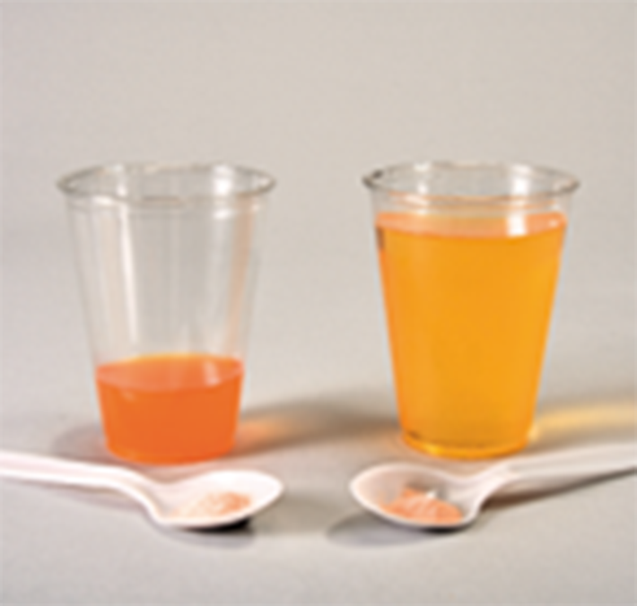
A diferença na coloração dos sucos nos permite identificar, de maneira qualitativa, quando soluções têm concentrações diferentes.
PHOTO RESEARCHERS/Science Source/Fotoarena
Concentração comum (C ): a concentração de uma solução pode ser determinada a partir da quantidade de soluto disponível em dado volume de solução. A quantidade de soluto é dada em massa e, por isso, podemos usar a seguinte fórmula:
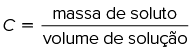
Assim, a unidade mais comum é g/L, mas também encontramos variações, como g/mL, g/cm
3 ou mg/L.
Observe este exemplo: quando adicionamos 5 g de sal de cozinha (NaC
ℓ
) a um copo com água, obtendo uma solução cujo volume final é igual a 250 mL, a concentração, em g/L, é:
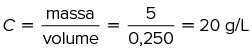
Isso significa que, em 1 litro dessa solução, há 20 g de NaC
ℓ
.
Concentração em quantidade de matéria (M): essa concentração é a mais utilizada na Química e nos diz qual é a quantidade de matéria (mol) de soluto que existe em determinado volume de solução. A unidade é dada em mol/L
ou simplesmente M (que significa molar, embora essa notação não seja mais recomendada) e é calculada pela fórmula:
M
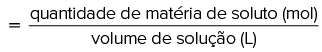
Logo, podemos dizer que:
M
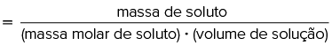
Aplicando em um exemplo: Qual a concentração em quantidade de matéria de uma solução preparada com 5 g de NaC
ℓ
e cujo volume final é igual a 250 mL?
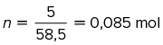
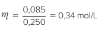
Isso significa que 1 litro de solução contém 0,34 mol de NaC
ℓ
.
Porcentagem em massa ou volume/Título (d): chamamos de título a quantidade de soluto (em grama ou em litro) para cada grama ou para cada litro de solução. A fórmula para calcular é:
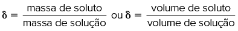
Os valores obtidos podem estar em porcentagem ou sem unidade. Por exemplo, se temos 5 g de NaC
ℓ
em 250 g de solução, o título será:
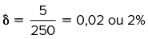
Isso significa que 2% da solução são compostos por de NaC
ℓ
.
Partes por milhão (ppm): essa maneira de expressar a concentração funciona bem quando temos pouquíssima quantidade de soluto em relação à quantidade de solução e significa que temos 1 parte de soluto para 10
6 partes de solução.
Por exemplo, se temos 5 g de NaC
ℓ
em 1 000 g de solução, temos 5 partes de soluto em 10
3 partes de solução, então:
5 partes NaC
ℓ
10
3 partes de solução
x 10
6 partes de solução
x=
5
∙
10
3 partes de NaC
ℓ
Temos 5
∙
10
3 ppm de NaC
ℓ
na solução.
Em ppm,
o soluto e a solução devem estar na mesma unidade para que a relação com “partes” possa ser feita.
Molalidade (W): expressa a quantidade de matéria de soluto existente em cada quilograma de solvente. A unidade utilizada é o mol/kg ou molal. A fórmula para o cálculo da molalidade é:
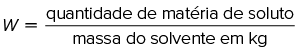
Então:
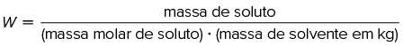
Aplicando em um exemplo: Qual é a concentração molal de uma solução que contém 5 g de NaC
ℓ
e 250 g de água?
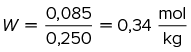
Fração (em massa, em quantidade de matéria, em volume) (X): a fração indica a razão entre a quantidade de soluto e a de solução e pode ser expressa em função da massa, da quantidade de matéria ou do volume, desde que as quantidades de soluto e de solução estejam na mesma unidade.
A fração não apresenta unidade, mas pode ser expressa em porcentagem.
Utilizando o mesmo exemplo anterior, 5 g de NaC
ℓ
e 250 g de água, formamos 255 g de solução, então a fração em massa será:
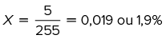
Se temos 0,085 mol de NaC
ℓ
e 14 mols de água, formamos 14,085 mols de solução, e a fração em quantidade de matéria será:
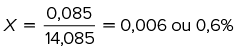
E, ainda, se temos 2,31 mL de NaC
ℓ
e 250 mL de água, temos 252,31 mL de solução, então a fração em volume será:
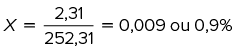
Mais
O que determina a concentração de uma solução?
Nessa simulação criada pela Universidade do Colorado, você vai aprender sobre as relações entre quantidade de matéria de soluto e volume de solução em litros. Além disso, vai aprender como essas variáveis influenciam a concentração em quantidade de matéria
fazendo ajustes na quantidade do soluto e no volume de solução, e alterando solutos para comparar diferentes compostos químicos em água.
O soro fisiológico utilizado em hospitais e vendido em farmácias para diversos fins consiste em uma solução aquosa de cloreto de sódio, geralmente comercializada em concentração 0,9%. Para preparar 2 litros dessa solução,
qual é a massa de cloreto de sódio que deve ser adicionada à água? Considere a densidade do soro fisiológico igual a 1 g/mL.
Resolução:
A concentração de 0,9% de cloreto de sódio significa que, de toda a solução, 0,9% é referente ao sal, e 99,1% é referente à água.
2 litros de solução de soro fisiológico equivalem a 2 000 g de solução, visto que sua densidade é igual a 1 g/mL:
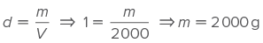
Consideramos 2 000 g como 100%, ou seja, a massa total da solução. Dessa forma, temos:
2 000 g 100%
x 0,9%
x=
18 g de sal NaC
ℓ
Para preparar 2 litros de soro, são necessários 18 g de cloreto de sódio.
Aplicando conhecimentos
1
Um comprimido de paracetamol tem massa de 1,5 g, porém apenas 750 mg são do analgésico. Qual é a concentração de paracetamol no medicamento em ppm?
500 000 ppm.
50 000 ppm.
5 000 ppm.
500 ppm.
50 ppm.
2
A embalagem de um suco em pó traz a informação de que 20 g do sólido rendem 2 litros da bebida. Qual é a fração, em porcentagem, do suco nessa solução?
Dados: densidade da água
=
1 g/mL.
1%
0,1%
10%
0,01%
1,5%
3
O camu-camu é uma fruta de cor vermelho-escura, do tamanho de uma jabuticaba e com uma das maiores concentrações de vitamina C. São aproximadamente 2 880 mg da vitamina para cada 102 mL da polpa da fruta. Sabendo que a vitamina
C é o ácido ascórbico e que apresenta massa molar de 176 g/mol, qual é a sua concentração em quantidade de matéria nessa fruta?
0,24 mol/L.
0,39 mol/L.
0,5 mol/L.
0,16 mol/L.
0,61 mol/L.
4
[...] o pintor era praticamente um químico [...]. O aspirante desse ofício tinha de aprender uma variedade enorme de receitas e conhecer as reações e propriedades de inúmeras substâncias para empregar esse conhecimento em seus
processos artísticos.
Disponível em: <http://www.cozinhadapintura.com/2010/09 /historia-da-tinta-oleo.html>. Acesso em: 21 maio 2020.
A tinta amarela era feita à base de cromato de chumbo(II), PbCrO
4 . O pigmento em pó era dissolvido em óleo para que os pintores o utilizassem em suas telas. Qual é a concentração de chumbo em mol/L em uma tinta preparada com 50 g de pigmento e 320 mL de óleo?
Dados: massa molar do chumbo
=
207 g/mol; massa molar do cromato de chumbo(II)
=
323 g/mol.
0,15 mol/L.
0,5 mol/L.
0,25 mol/L.
0,3 mol/L.
0,6 mol/L.
5
Unesp 2021 O álcool isopropílico (CH
3 CH(OH)CH
3 ), entre outras aplicações, é empregado na limpeza de circuitos eletrônicos. Em um experimento, um estudante utilizou um frasco conta-gotas com álcool isopropílico a 20
°
C e verificou que eram necessárias 65 gotas desse álcool para perfazer o volume de 2 mL. Sabendo que a densidade do álcool isopropílico nessa temperatura é aproximadamente 0,8 g/mL, a quantidade desse álcool, em mol de moléculas, presente em cada gota
é próxima de
1
∙
10
– ² mol.
4
∙
10
– ³ mol.
3
∙
10
– ⁵ mol.
3
∙
10
– ⁶ mol.
4
∙
10
– ⁴ mol.
CONSOLIDANDO SABERES
1
Uerj 2019 Para a remoção de um esmalte, um laboratório precisa preparar 200 mL de uma solução aquosa de propanona na concentração de 0,2 mol/L. Admita que a densidade da propanona pura é igual a 0,8 kg/L.
Nesse caso, o volume de propanona pura, em mililitros, necessário ao preparo da solução corresponde a:
Dados: C
=
12, H
=
1, O
=
16
2,9
3,6
5,8
6,7
2
Unifesp 2018 Um volume de 100 mL de solução aquosa de sulfato de ferro(II) passou por um processo de evaporação lento e completo, obtendo-se 2,78 g de cristais de FeSO
4∙
7 H
2 O.
A solução aquosa de sulfato de ferro(II) é condutora de corrente elétrica? Justifique sua resposta.
Calcule a quantidade de sal hidratado, em mol, obtido após a evaporação. Determine a concentração inicial de FeSO
4 na solução, em mol/L, antes da evaporação.
3
Unesp 2018 De acordo com o Relatório Anual de 2016 da Qualidade de Água, publicado pela Sabesp, a concentração de cloro na água potável da rede de distribuição deve estar entre 0,2 mg/L, limite mínimo, e 5 mg/L, limite
máximo.
Considerando que a densidade da água potável seja igual à da água pura, calcula-se que o valor médio desses limites, expresso em partes por milhão, seja
5,2 ppm
18 ppm
2,6 ppm
26 ppm
1,8 ppm
4
Uerj 2018 Em análises metalúrgicas, emprega-se uma solução denominada nital, obtida pela solubilização do ácido nítrico em etanol. Um laboratório de análises metalúrgicas dispõe de uma solução aquosa de ácido nítrico
com concentração de 60% m/m e densidade de 1,4 kg/L. O volume de 2 mL dessa solução é solubilizado em quantidade de etanol suficiente para obter 100 mL de solução nital. Com base nas informações, a concentração de ácido
nítrico, em g/L, na solução nital é igual a:
10,5
14
16,8
21,6
5
UPF-RS 2018 O luminol é uma substância luminescente utilizada para a identificação de manchas de sangue em cenas de crimes. A sua luminescência pode ser testada utilizando uma série de reagentes, dentre os quais está
o hidróxido de sódio aquoso em concentração 10%. Para que um perito possa preparar 250 mL de uma solução de hidróxido de sódio na concentração desejada para análise, quantos gramas de hidróxido de sódio são necessários?
2,5 g
0,25 g
10 g
0,10 g
25 g
6
PUC-Campinas 2018 Os xaropes são soluções concentradas de açúcar (sacarose). Em uma receita caseira, são utilizados 500 g de açúcar para cada 1,5 L de água. Nesse caso, a concentração mol/L de sacarose nesse xarope é
de, aproximadamente,
Dados: massa molar da sacarose
=
342 g/mol
2,5
1,5
2,0
1,0
3,0
7
UPE 2017 De acordo com um comunicado emitido pela Academia Americana de Pediatria, em 2015, não existem problemas na higienização dos dentes dos bebês e das crianças com cremes dentais que contêm flúor em sua composição.
No entanto, esses produtos devem apresentar uma concentração de flúor entre 0,054 e 0,13 (título em massa), para se obter uma proteção adequada contra as cáries. Foram realizados testes de qualidade relativos à presença
do flúor nos seguintes cremes dentais recomendados para bebês e crianças:
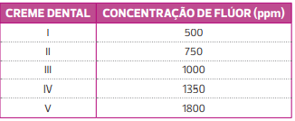
Passaram, no teste de qualidade, apenas os cremes dentais
I e II.
III e IV.
II e III.
III, IV e V.
II, III e IV.
8
Uerj 2017 Na análise de uma amostra da água de um reservatório, verificou-se a presença de dois contaminantes, nas seguintes concentrações:
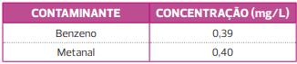
Em análises químicas, o carbono orgânico total é uma grandeza que expressa a concentração de carbono de origem orgânica em uma amostra. Assim, com base nos dados da tabela, a concentração de carbono orgânico total na amostra de
água examinada, em mg/L, é igual a:
0,16
0,36
0,52
0,72
9
Imed-RS A concentração comum, cujo símbolo é ____, indica a razão entre a massa do _______ e o volume do ________. Assinale a alternativa que preenche, correta e respectivamente, as lacunas do trecho acima.
 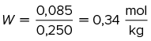
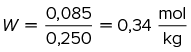